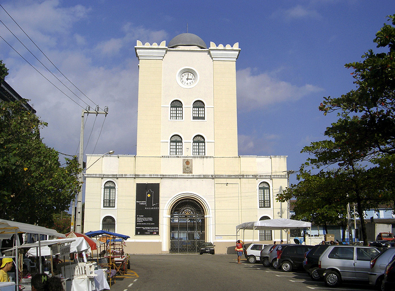
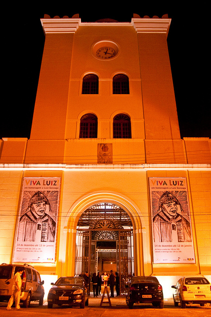
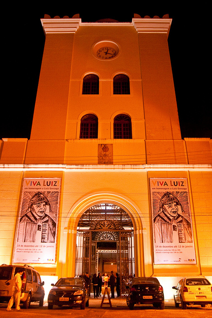

Torre Malakoff
A Torre Malakoff é um importante monumento localizado no Bairro do Recife, área tombada pelo Iphan. Construído no século XIX (com materiais provenientes da demolição do Forte do Bom Jesus) para servir como observatório astronômico e portão monumental do Arsenal da Marinha. O caráter militar da obra está presente em sau fachada e na simetria de sua planta, lembrando também, mesquitas do Oriente. No ano de 2000, a Torre foi transformada em espaço cultural com destaque para a música e a fotografia. São 8 (oito) salas de exposição, além de salas educativas e administrativas. Na área externa, um anfiteatro serve como espaço para diversos eventos. A Torre Malakoff é um monumento tombado pela Fundarpe. O observatório do espaço funciona aos domingos, das 16h às 19h30.

 

Um pouco de história
Um decreto provincial de 1 de janeiro de 1834 criava o Arsenal da marinha, tendo o projeto arquitetônico sido feito em 1837. Em 1853 foi iniciada a construção do então chamado Portão Monumental do arsenal da Marinha, na proximidade do Porto do Recife. Na época da sua construção, havia muita notícia veiculada pelo Diario de Pernambuco a respeito da Guerra da Criméia, com destaque para o foco de resistência em defesa da colina e da torre fortificada de Malakoff, o que gerou grande interesse no Recife e em todo o Estado de Pernambuco. Segundo o médico e historiador Pedro Veloso Costa, em seu livro A Marinha em Pernambuco (Fundarpe, 1987), o batismo da torre com o nome Malakoff foi dado pela própria população, que na época acompanhava a longínqua batalha pelo jornal. Quando os arsenais da Marinha foram extintos com o início da República, a Torre foi transferida para o patrimônio do Porto, sendo depois abandonada e ameaçada de extinção. A população, sob a liderança de instituições literárias e culturais do Recife, a exemplo do Instituto Arqueológico, Histórico e Geográfico de Pernambuco (IAHGP) e o jornal Diário de Pernambuco, mobilizou-se contra a demolição, utilizando como exemplo a própria resistência de Malakoff na Guerra da Criméia, sendo então, utilizada como centro de irradiação da Cultura na cidade. Ali funcionou, por algum tempo, um observatório astronômico que depois foi usado para estudos baseados na ciência.